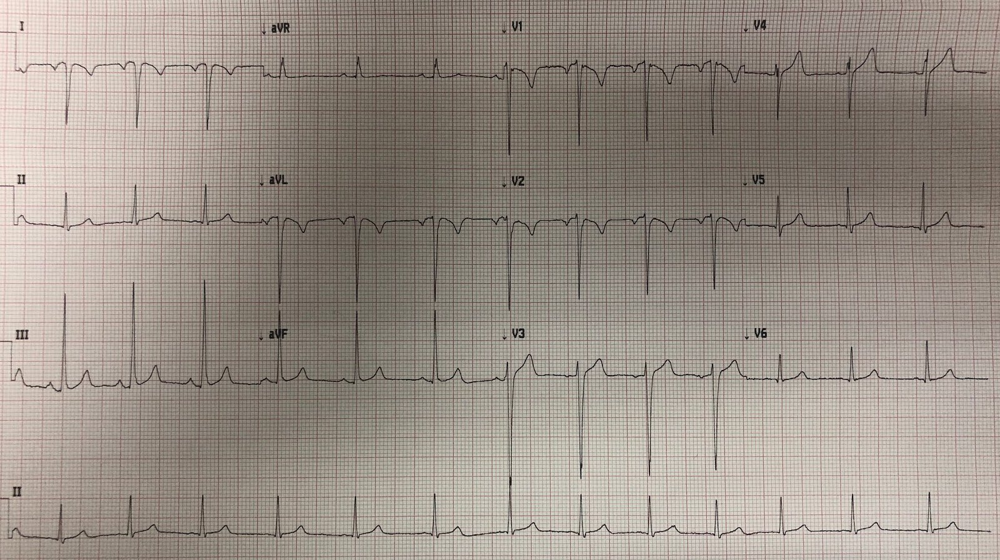
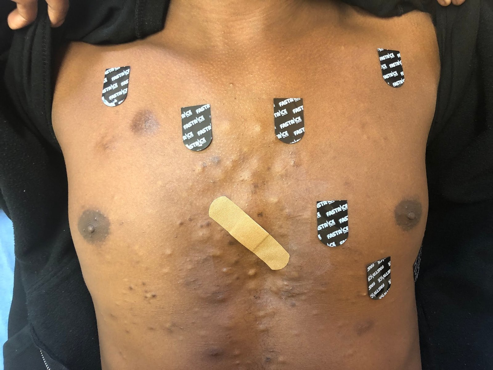
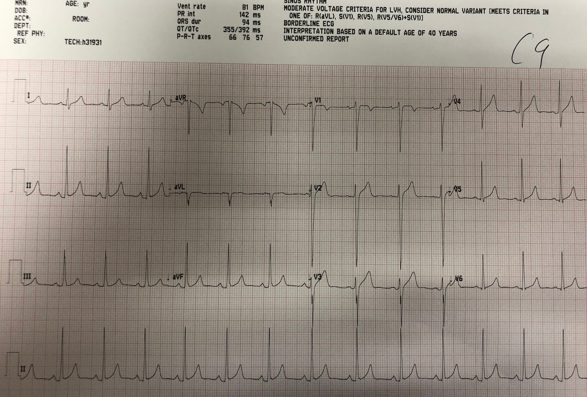
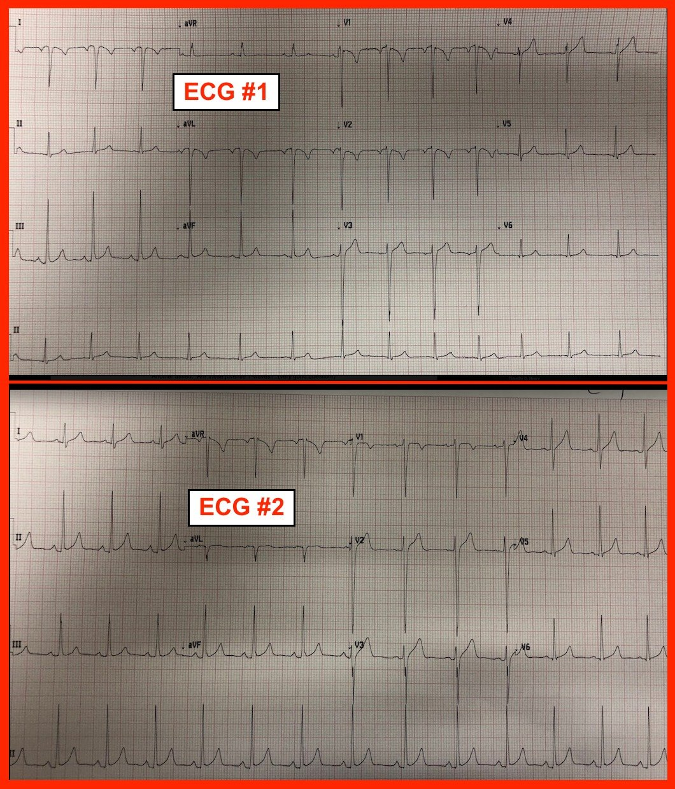

29/07/2018 — Đau ngực và sóng T đảo ngược ở chuyển đạo V2
Bản dịch tiếng Việt của bài "Chest pain and T-wave inversion in lead V2" – Dr. Smith’s ECG Blog. Giữ nguyên toàn bộ 6 hình ảnh của bản gốc.
Đây là điện tâm đồ của một nam thanh niên than đau ngực.


BLỐC PHÂN NHÁNH TRÁI SAU (LEFT POSTERIOR FASCICULAR BLOCK) [TRỤC QRS LỚN HƠN 109, Q THÀNH DƯỚI]
ST CHÊNH XUỐNG MỨC ĐỘ VỪA [ST CHÊNH XUỐNG 0,05+ mV]
ĐIỆN TÂM ĐỒ BẤT THƯỜNG Tôi đã xem điện tâm đồ trước khi khám bệnh nhân, thậm chí trước khi anh ấy vào phòng. Tôi lập tức thấy máy tính đã sai, nhưng tôi phát hiện 2 bất thường. Đó là gì? Tôi đã đưa điện tâm đồ này cho một số bác sĩ xem. Họ lo lắng về sóng T đảo ngược ở V2. Một người nhắc đến “sóng Wellens” Một người khác hỏi: “Đây có phải là sóng T thiếu niên (juvenile T-waves) không?” (câu hỏi rất hay!) Xem thêm về vấn đề này: Persistent Juvenile T-wave Pattern (Hình ảnh sóng T thiếu niên tồn tại dai dẳng) Bạn nghĩ sao?
Tôi liên tục nhận được các tweet phản hồi cho rằng sóng T đảo ngược ở V2 là bình thường. Nó không bình thường. Nó không nhất thiết là bệnh lý, nhưng nó không bình thường. Hiện tượng này gặp bình thường ở khoảng 1% nam giới trên 14 tuổi nhưng dưới 30 tuổi. Nó thường gặp ở phụ nữ trẻ (đây là các sóng T thiếu niên điển hình, xem link tới bài liên quan ở trên).
Sóng T đảo ngược ở V2 gặp trong nhiều bệnh lý, bao gồm nhồi máu cơ tim thành sau, thuyên tắc phổi, hội chứng Wellens. Đây là một trong các tiêu chuẩn phụ của loạn sản thất phải gây loạn nhịp (arrhythmogenic right ventricular dysplasia) (“Phụ: Sóng T đảo ngược ở các chuyển đạo trước tim phải V1-V2″)
Đây là danh sách của tôi về sóng T đảo ngược Bình thường và Bệnh lý:
• Vectơ sóng T bình thường hướng sang trái, xuống dưới và ra trước.
• Sóng T phải dương ở chuyển đạo II.
• Sóng T đảo ngược ở chuyển đạo I khi QRS dương luôn là bất thường
• Ở điện tâm đồ bình thường, sóng T ở V5-V6 phải luôn dương.
• Sóng T đảo ngược ở chuyển đạo III hoặc aVL có thể là bình thường
• Chuyển đạo aVF có thể hơi âm
• Chuyển đạo V1 thường âm
• Trong các chuyển đạo V2-V4, sóng T đảo ngược bình thường hiếm gặp ở V2, hiếm hơn ở V3 và hiếm nhất ở V4
• Góc QRS-T > 60 độ
Diễn giải của tôi là: đây là điện tâm đồ bình thường của một nam thanh niên gầy, khỏe mạnh.
Nhưng nó trông bất thường vì có 2 lỗi đặt điện cực khác nhau trên cùng một điện tâm đồ:
1) V1 và V2 bị đặt quá cao. Khi thấy sóng T đảo ngược ở chuyển đạo V2, bạn nên tự hỏi liệu có phải do điện cực bị đặt cao hay không. Làm sao để xác nhận hay bác bỏ điều đó? Hãy nhìn sóng P ở V2: nó phải dương. Ở đây nó âm. Như vậy, V1 và V2 đã bị đặt quá cao. “ST chênh xuống” mà máy tính nhận thấy nằm ở các chuyển đạo V1 và V2 và cũng là hậu quả của việc đặt điện cực; xem bên dưới, khi được ghi đúng cách, ở đó có ST chênh lên biến thể bình thường.
2) Đảo điện cực chi. Hãy nhìn trục (của các chuyển đạo chi). Trục hướng thẳng sang phải, với sóng R cao ở I và aVL. Thế nhưng lại có sóng R ở V5 và V6. Mặc dù V5 và V6 hơi khác I và aVL vì chúng nằm thấp hơn, chúng không nên trông khác biệt đến mức này. Sự khử cực hướng sang trái (V5 và V6), chứ không phải sang phải. Đây là lý do trục có vẻ lệch phải và là lý do máy tính gọi là blốc phân nhánh trái sau.
Bệnh nhân đã vào phòng và vẫn còn dán các miếng điện cực. Tôi đã xin phép bằng văn bản để chụp ảnh ngực của anh ấy. Hãy xem V1 và V2 cao đến mức nào:


Tôi đặt các điện cực vào đúng vị trí (khoang liên sườn thứ 4) và ghi một điện tâm đồ khác, đồng thời chắc chắn rằng các điện cực chi không bị đảo.
Đây là kết quả:


Trục giờ đã bình thường.
Sóng T dương ở chuyển đạo V2, sóng P cũng vậy. ST chênh xuống ở V1 và V2 được thay bằng ST chênh lên biến thể bình thường.
Điều thú vị là tôi đã quên ghi kết quả đọc chính thức cho điện tâm đồ đầu tiên đó.
Một bác sĩ khác đã ghi, và chỉ đơn giản xác nhận kết quả đọc sai của máy tính.
Tôi không hiểu làm sao nó lại không chẩn đoán được nhịp xoang.
Chỉ đơn giản xác nhận kết quả đọc của máy tính là điều nguy hiểm!
Đây là bình luận của K. Wang:
1) Máy tính gọi là Cuồng nhĩ/nhịp
nhanh nhĩ, điều rõ ràng là sai. Máy tính thường giỏi hơn
thế này. Máy tính đã sai ở đâu? Tôi thấy rằng, ở chuyển đạo I,
sóng P âm và sóng T âm xuất hiện cách nhau gần bằng nhau, tương ứng
tần số khoảng 160/phút, mà máy tính đã nhầm là sóng P nhĩ lạc chỗ
hoặc thành phần âm của sóng cuồng nhĩ.
2)
Trước khi gọi là trục lệch phải, hãy luôn chú ý đến sóng P
ở chuyển đạo I. Nếu nó đảo ngược, thì hoặc là đảo điện cực tay, hoặc
tim sang phải. Cần đến các chuyển đạo trước tim để phân định điều này.
Rõ ràng, lỗi do con người đảo điện cực tay phổ biến hơn nhiều
so với tim sang phải.
K. WANG.
Bình luận của Sam Ghali:
Steve,
Lại một ca giảng dạy tuyệt vời! Thật khó tin là V1 + V2 thường xuyên bị đặt cao đến vậy, đúng ở vị trí anh đã chỉ ra. Tôi nghĩ chủ yếu là vì không phải cởi áo thì dễ hơn, hoặc ở phụ nữ thì áo ngực gây cản trở. Về việc đảo điện cực chi, manh mối then chốt khác cho thấy các điện cực đã bị đảo là chúng tạo ra một trục sóng P bất thường (+ ở aVR, – ở I & aVL) khoảng 120-150 độ, trùng với trục QRS. Tôi đoán đây là lý do máy tính không gọi là Nhịp xoang!
Sam

———————————————————–
Bình luận của KEN GRAUER, MD (29/7/2018):
———————————————————–
Ca bệnh ngắn gọn và đơn giản, trong đó Dr. Smith ôn lại một Khái niệm “Phải Biết” — đó là nhận ra ngay Đặt Sai vị trí điện cực. Việc không chỉ một — mà nhiều bác sĩ dường như đã bỏ sót cả hai kiểu đặt sai vị trí điện cực xảy ra ở đây — và việc một bác sĩ khác đã ký xác nhận kết quả đọc bằng máy tính sai lệch nghiêm trọng của bản ghi thứ 1, dường như thậm chí không nhìn vào điện tâm đồ — là bằng chứng cho thấy vẫn còn nhiều việc phải làm trong lĩnh vực đọc điện tâm đồ. Dr. Smith đã trình bày một cách thành thạo những điểm thiết yếu của chẩn đoán điện tâm đồ trong ca này. Tôi chỉ giới hạn bình luận của mình ở vài điểm bổ sung. Để rõ ràng và dễ so sánh — tôi đã đặt cả hai bản ghi cạnh nhau trong Hình 1.


- Có nhiều kiểu đặt sai vị trí điện cực chi khác nhau. Dù vậy, kiểu nhầm điện cực thường gặp nhất (hơn hẳn!) — là nhầm LA-RA. Khi điều này xảy ra — thì hình dạng của phức bộ QRS và sóng ST-T ở chuyển đạo I sẽ trông giống như hình dạng thường thấy ở chuyển đạo aVR — và ngược lại. Bạn có thể ngay lập tức nghi ngờ đã có nhầm LA-RA nếu bạn nhớ rằng không bao giờ được có âm toàn bộ (global negativity) (của sóng P, QRS và sóng T) ở chuyển đạo I. Chỉ có 2 tình trạng gây ra điều này là: i) nhầm LA-RA; và ii) tim sang phải (vốn hiếm gặp!). Bạn có thể nhanh chóng loại trừ tim sang phải bằng cách xem có tăng tiến sóng R bình thường hay không (cũng như kiểm tra để chắc chắn tiếng tim nghe ở bên trái). Lưu ý trong Hình 1, ở chuyển đạo I của điện tâm đồ #1 có âm toàn bộ! Ngay cả khi có một nhồi máu thành bên rất lớn tạo ra sóng Q lớn ở chuyển đạo I — bạn cũng sẽ không thấy âm toàn bộ ở chuyển đạo này.
- Góc nhìn của chuyển đạo aVR là nhìn xuống tim từ vai phải. Vì vậy — chuyển đạo này thường thấy hoạt động điện đi ra xa khỏi aVR, điều này thường tạo ra hình ảnh âm toàn bộ thấy bình thường ở aVR. Đôi khi, bạn có thể thấy một thành phần dương ở aVR — nhưng bạn không nên thấy sóng P và phức bộ QRS dương như ở aVR của điện tâm đồ #1.
- Cuối cùng — KHÔNG có sóng P dương ở chuyển đạo II của điện tâm đồ #1. Điều này có nghĩa là hoặc nhịp không phải nhịp xoang — hoặc — có một kiểu đặt sai vị trí điện cực nào đó.
- Lưu ý trong Hình 1 rằng hoạt động điện đã trở lại bình thường ở cả 3 chuyển đạo này trong điện tâm đồ #2 sau khi đã sửa lại vị trí điện cực chi ( = sóng P, QRS và sóng T dương ở chuyển đạo I; âm toàn bộ như đúng ra phải có ở aVR; và sóng P dương trở lại ở chuyển đạo II).
- ĐIỂM THEN CHỐT (PEARL): Tài liệu tham khảo “Tra Nhanh” mà tôi yêu thích về các kiểu đặt sai vị trí điện cực thường gặp nhất là từ LITFL (= Life-In-The-Fast-Lane). Bên cạnh các sơ đồ và bảng biểu tuyệt vời, dễ sử dụng trong bài viết của họ — tôi rất thích việc có thể tìm thấy ngay lập tức bài LITFL này bằng cách tìm trên mạng cụm từ “lead misplacement litfl” — điều tôi đã làm rất nhiều lần khi muốn tìm câu trả lời nhanh cho câu hỏi điện cực nào đã bị nhầm với điện cực nào?
Nhóm chúng tôi đã khảo sát trên internet nhằm đánh giá mức độ phổ biến của việc đặt sai vị trí điện cực ngực. Chỉ cần nói rằng ngay cả trên các trang internet tự nhận là minh họa “cách đặt điện cực ngực đúng” — lỗi đặt điện cực ngực cũng phổ biến đến mức đáng lo ngại. Lỗi thường gặp nhất là đặt điện cực V1 và V2 quá cao một hoặc hai khoang liên sườn trên ngực. Chỉ cần một ví dụ về tác động lâm sàng tiềm tàng của việc đặt sai điện cực V1 và V2 — bạn không cần tìm đâu xa hơn bài ECG Blog của Dr. Meyers và Dr. Smith từ hôm qua ( = ngày 28 tháng Bảy năm 2018 — Bạn sẽ thấy phần bàn luận của tôi về lỗi này nếu cuộn xuống cuối trang).
- Nhận ra điện cực V1 và V2 có lẽ bị đặt quá cao trên ngực là việc dễ dàng! Hãy tìm: i) Một thành phần âm đáng kể của sóng P ở chuyển đạo V1 và V2; ii) Sóng T đảo ngược chỉ khu trú ở chuyển đạo V1 và V2; iii) dạng rSr’ ở V1 và V2; và iv) Hình dạng phức bộ QRST ở V1 rất giống hình dạng QRST ở chuyển đạo aVR. Chỉ cần 2 hoặc 3 trong các dấu hiệu này là đủ để gợi ý nghi ngờ — điều mà bạn có thể dễ dàng kiểm tra bằng cách ghi lại điện tâm đồ sau khi đã kiểm tra vị trí điện cực. Cũng cần nói rằng bình thường có thể có một thành phần âm nhỏ của sóng P ở chuyển đạo V1 — và khi có bất thường nhĩ trái, thành phần âm này ở V1 có thể trở nên khá lớn. Nhưng thường thì người ta không thấy sóng P sâu, âm hoàn toàn như ở V1 và V2 của điện tâm đồ #1. Và người ta thường không thấy hình dạng gần như giống hệt nhau ở V1 và V2, với sóng P âm và sóng T đảo ngược cũng trông gần như giống hệt những gì ta thấy ở chuyển đạo aVR trong điện tâm đồ #2, sau khi các điện cực chi đã được đặt đúng.
- ĐIỂM THEN CHỐT (PEARL): Tài liệu tra nhanh mà tôi yêu thích về việc đặt điện cực V1 và V2 quá cao trên ngực là Thư gửi Tòa soạn của Javier García-Niebla (Rev Esp Cardiol 61(10):1109-1110, 2008).